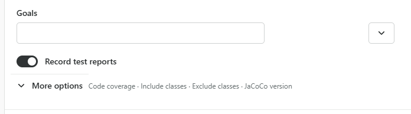

Maven
Runs Maven goals with a POM, a Maven version, JVM options and properties.
In the step picker this is called Invoke top-level Maven targets.
When to use it
Use it for Java services in your pipeline, such as a matchmaking backend. A non-zero exit code from Maven fails the step. Surefire and Failsafe test reports are recorded for you.
How to set it up
- Open the build configuration and click Settings › Build Steps.
- Click Add build step. Type
Mavenin Filter step types if you like, then click the Maven tile (group Build tools). - Type a Step name, for example
Build lobby. - Fill in the fields described below.
- Optional: set Execute step, Conditions and Retry on failure. See The steps list and the step editor.
- Click Save.

Every field
| Field | What it does | Default | Example |
|---|---|---|---|
| Maven Version | The Maven installation, chosen from Settings › Tools. Default (version) uses the default installation, Agent PATH uses mvn from the agent. Shown when an installation exists. | Default | Maven 3.9 |
| JDK | (Inherit) uses the JDK of the build configuration or the java of the agent. Not used inside a container. | Inherit | JDK 21 |
| Goals | The goals and options, such as clean install. Build parameters and environment variables work as ${env.NAME}. | Empty | clean verify |
| Record test reports | Records Surefire and Failsafe reports after the run, unless the build configuration has a JUnit publisher. | On | On |
| Code coverage, Include classes, Exclude classes, JaCoCo version (More options) | JaCoCo. Maven fetches jacoco-maven-plugin from the repositories it is configured with. The goals prepare-agent and report run from the command line and the POM is not changed. A surefire argLine in the POM must keep the argLine property. JaCoCo version empty uses 0.8.15. | None | JaCoCo |
| Incremental building (More options) | Builds only the modules with changed files and the modules that depend on them, with -pl and -amd. A change in the root folder, a path outside the workspace, or a build with no changes builds everything. Modules the changed ones depend on must be in the local repository. | Off | On |
| POM (More options) | The root POM file, if it is not pom.xml. | Empty | services/pom.xml |
| Properties (More options) | One name=value per line, passed as -Dname=value. Lines starting with # are comments. | Empty | skipITs=true |
| JVM Options (More options) | Options for the JVM that runs Maven. | Empty | -Xmx1g |
| Additional command line parameters (More options) | Placed before the goals and split on white space. | Empty | -T 4 -P release |
| Working directory (More options) | A folder in the workspace to run Maven in. Empty runs it in the workspace. | Empty | services/lobby |
| Inject build variables (More options) | Passes all build variables to Maven as Java properties. Seldom needed, because they are environment variables anyway. Better map the ones you need in Properties: MY_VAR=${MY_VAR}. | Off | Off |
| Use private Maven repository (More options) | Gives this build its own local repository, so builds do not share downloaded files. | Off | On |
| Settings file, Global Settings file (More options) | Which Maven settings.xml to use. By default the settings of the Maven installation and the user on the agent. | Default settings | A settings file in the workspace |
A worked example
Build and test the lobby service. Step name Build lobby, Goals clean verify, Working directory services/lobby, Record test reports on.
What you see when it runs
The console shows the mvn clean verify command and Maven's output. Test results show on the build. With incremental building on, the log says Incremental building: N changed module(s), and the modules that depend on them: M.
Problems and fixes
| Problem | What to do |
|---|---|
| The Maven Version list is missing | No installation is defined. Add one under Settings › Tools, or use mvn from the agent. |
| Everything is built although incremental building is on | The log says why: no changes, a change in the root folder, or a path outside the workspace. |
| JaCoCo reports no coverage | A surefire argLine in the POM must keep the argLine property. |